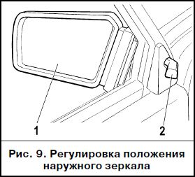

ОПИСАНИЕ АВТОМОБИЛЯ:Кузов и салон
ОБОРУДОВАНИЕ САЛОНА
Выбор оптимального положения наружного зеркала 1 (рис. 9) осуществляется рукояткой 2. В вариантном исполнении автомобили оборудованы электроприводом регулировки наружных зеркал.
Электроприводом регулировки наружных зеркал, блок управления которого располагается на облицовке тоннеля пола, комплектуются автомобили в вариантном исполнении.
В этом случае последовательным наклоном клавиши 2 (рис. 26 “А”) в направлении стрелок производится вертикальная и горизонтальная регулировка как правого, так и левого зеркала.
Выбор регулируемого зеркала осуществляется вращением клавиши на 90° и определяется направлением метки 1.
При этом клавиша имеет два положения и поэтому при включенном зажигании электропривод одного из зеркал постоянно находится под напряжением.
В вариантном исполнении на автомобиле устанавливается блок управления наружными зеркалами, в котором выбор зеркал производится перемещением движка 4 (рис. 26 “В”), а их регулировка - нажатиями на края клавиши 5 в местах, указанных стрелками.
В крайних положениях движка ставится под напряжение электропривод левого (буква “L”) или правого (буква “R”) зеркал и загорается соответствующий сигнализатор 3. В среднем положении движка электропривод зеркал выключен.
Внутреннее зеркало 2 (рис. 10) регулируется поворотом вокруг шарнирной головки.
При ослеплении светом фар движущегося сзади транспорта рычажком 1 измените угол наклона зеркала.
В вариантном исполнении устанавливается противоослепляющее зеркало, у которого нет рычажка 1 и не меняется угол.
Противосолнечные козырьки 3 в зависимости от направления лучей солнца можно установить из положения I в положения II или III.
В вариантном исполнении козырек пассажира имеет зеркало с внутренней стороны.
Лампа плафона 4 освещения салона загорается при открывании двери и гаснет, примерно, через 10 с после закрывания двери или после перевода ключа в выключателе зажигания в положение “Зажигание”.
При закрытых дверях освещение салона включается и выключается нажатием на концы рассеивателя плафона.
Управление задержкой плафона внутреннего освещения
Эта функция позволяет сохранять в течение некоторого времени освещение салона после закрытия двери автомобиля, что облегчает действия водителя в темное время суток.
Для работы данной функции переключатель плафона должен быть переведен в выключенное состояние.
В этом состоянии при открывании двери водителя плафон загорается и горит все время, пока открыта дверь водителя.
Если зажигание автомобиля не включено, то после закрытия двери водителя плафон остается во включенном состоянии еще 12 се- кунд, после чего в течение 4 секунд плавно гаснет.
Если дверь закрывается при включенном зажигании автомобиля, то плафон выключается сразу же после закрытия двери.
Если во время работы задержки выключения плафона перевести ключ зажигания в положение “включено”, то плафон погаснет без задержки.
Если во время работы задержки выключения плафона снова открыть дверь, то плафон включается и горит все время, пока дверь открыта, и далее - как описано выше.
Плафон индивидуального освещения обеспечивает направленную подсветку отдельных предметов.
Включение плафона осуществляется поворотом тубуса 1 (рис. 11) по часовой стрелке.
Оптическая ось плафона 2 может отклоняться на угол до 30 0 во всех направлениях.
Для выключения тубус поворачивайте против часовой стрелки.
Вещевые ящики
Чтобы открыть крышку 1 (рис. 12) нижнего вещевого ящика, прижмите рукоятки замков 2 к ручке и потяните ее на себя.
Если включено наружное освещение, то при открытой крышке фонарь 3 освещает внутреннюю часть ящика.
Для доступа к верхнему вещевому ящику при открытой крышке 1 необходимо нажать на рычажок 4 замка крышки 5.
Передняя пепельница
Чтобы воспользоваться пепельницей 1 (рис. 13), потяните ее на себя.
Для очистки пепельницы нажмите на пластину 2 гашения сигарет и выньте ее из гнезда.
При включении наружного освещения внутренняя часть пепельницы подсвечивается специальным фонарем.